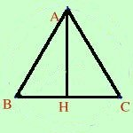

|
In un triangolo isoscele la base e' uguale all'altezza ad essa relativa; si sa che sottraendo m 10 alla base ed aggiungendo m 20 all'altezza l'area del triangolo aumenta di 100 m2. Determinare il perimetro del triangolo  Sappiamo che AH = BC Pongo: AH = BC = x Ora interpreto Togliendo 10 alla base ed aggiungendo 20 all'altezza la nuova area e' uguale a quella vecchia aumentata di 100 Trasformo in linguaggio matematico: Sottraendo 10 alla base ( BC - 10 ) ed aggiungendo 20 all'altezza( AH + 20 ) La nuova area ( (BC - 10)·(AH + 20) /2 )) e' uguale (=) a quella vecchia((BC·AH)/2 ) aumentata di 100 (+ 100) Quindi scrivo la relazione (BC - 10)·(AH + 20) BC·AH --------------------------- = ---------- + 100 2 2 sostituisco l'incognita (x - 10)·(x + 20) x·x --------------------- = ------- + 100 2 2 Calcolo x2 - 10x + 20x -200 x2 + 200 -------------------------- = ----------- 2 2 tolgo i denominatori x2 - 10x + 20x - 200 = x2 + 200 x2 - 10x + 20x -200 - x2 - 200 = 0 - 10x + 20x -200 - 200 = 0 10x - 400 = 0 10x = 400 AH = BC = x x = 40 quindi: AH = BC = 40 per trovare il perimetro devo trovare il valore di AC Nel triangolo AHC conosco AH = 40m ed HC=20m, per trovare AC applico il teorema di Pitagora al triangolo AHC. Teorema di Pitagora AC2 = AH2 + HC2 calcolo AC2 = 402 + 20 = 1600 + 400 = 20002 AC = Quindi: P(ABC)= BC + 2 AC = 40 + 2(20 |